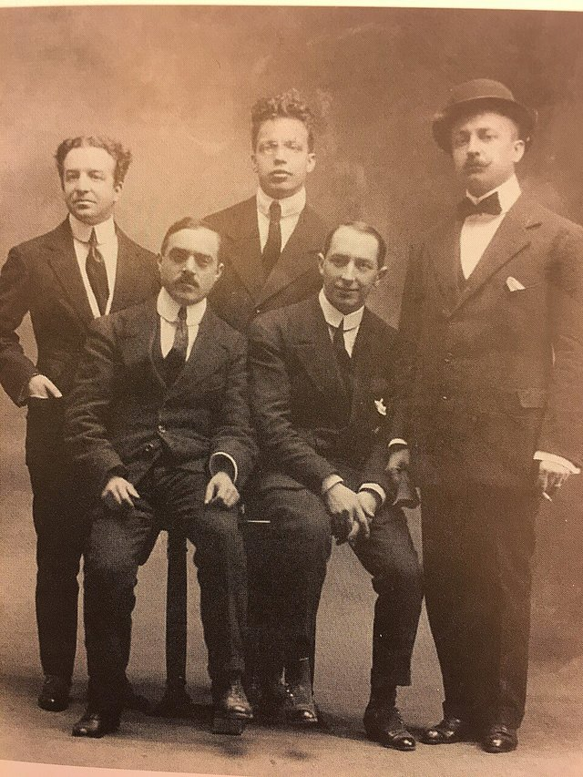

Poesia del giorno · 2 dicembre


Filippo Tommaso Marinetti
Marinetti crebbe ad Alessandria d’Egitto, prese il diploma a Parigi e cominciò a scrivere in francese. Il 20 febbraio 1909 pubblicò su Le Figaro il manifesto del futurismo: la velocità, la macchina, la guerra «sola igiene del mondo», il disprezzo per i musei. Dopo fu interventista, fascista della prima ora, volontario in Russia. Morì a Bellagio nel dicembre 1944.
«À mon Pégase» è dell’anno prima del manifesto, nella raccolta La Ville charnelle. Il cavallo alato dei poeti è diventato un’automobile da corsa: il poeta toglie i freni, supera le montagne e i fiumi, sfida le stelle e alla fine si stacca da terra. C’è già tutto il futurismo, con la retorica e l’energia insieme.
À mon Pégase
Dieu véhément d’une race d’acier, Automobile ivre d’espace, qui piétines d’angoisse, le mors aux dents stridentes ! Ô formidable monstre japonais aux yeux de forge, nourri de flamme et d’huiles minérales, affamé d’horizons et de proies sidérales, je déchaîne ton cœur aux teuf-teufs diaboliques, et tes géants pneumatiques, pour la danse que tu mènes sur les blanches routes du monde. Je lâche enfin tes brides métalliques… Tu t’élances, avec ivresse, dans l’Infini libérateur !… Au fracas des abois de ta voix… voilà que le Soleil couchant emboîte ton pas véloce, accélérant sa palpitation sanguinolente au ras de l’horizon… Il galope là-bas, au fond des bois… regarde !… Qu’importe, beau démon ?… Je suis à ta merci… Prends-moi ! Sur la terre assourdie malgré tous ses échos, sous le ciel aveuglé malgré ses astres d’or, je vais exaspérant ma fièvre et mon désir à coups de glaive en pleins naseaux !… Et d’instant en instant, je redresse ma taille pour sentir sur mon cou qui tressaille s’enrouler les bras frais et duvetés du vent. Ce sont tes bras charmeurs et lointains qui m’attirent ! ce vent, c’est ton haleine engloutissante, insondable Infini qui m’absorbes avec joie !… Ah ! Ah !… des moulins noirs, dégingandés, ont tout à coup l’air de courir sur leurs ailes de toile baleinée comme sur des jambes démesurées… Voilà que les Montagnes s’apprêtent à lancer sur ma fuite des manteaux de fraîcheur somnolente… Là ! Là ! regardez ! à ce tournant sinistre !… Montagnes, ô Bétail monstrueux, ô Mammouths qui trottez lourdement, arquant vos dos immenses, vous voilà dépassés… noyés… dans l’écheveau des brumes !… Et j’entends vaguement le fracas ronronnant que plaquent sur les routes vos jambes colossales aux bottes de sept lieues… Montagnes aux frais manteaux d’azur !… Beaux fleuves respirant au clair de lune !… Plaines ténébreuses ! je vous dépasse au grand galop de ce monstre affolé… Étoiles, mes Étoiles, entendez-vous ses pas, le fracas des abois et ses poumons d’airain croulant interminablement ? J’accepte la gageure… avec Vous, mes Étoiles !… Plus vite !… encore plus vite !… Et sans répit, et sans repos !… Lâchez les freins !… Vous ne pouvez ?… Brisez-les donc !… Que le pouls du moteur centuple ses élans ! Hurrah ! Plus de contact avec la terre immonde !… Enfin, je me détache et je vole en souplesse sur la grisante plénitude des Astres ruisselants dans le grand lit du ciel !
da La Ville charnelle, Parigi, Sansot, 1908, pp. 169–172 · testo da Wikisource